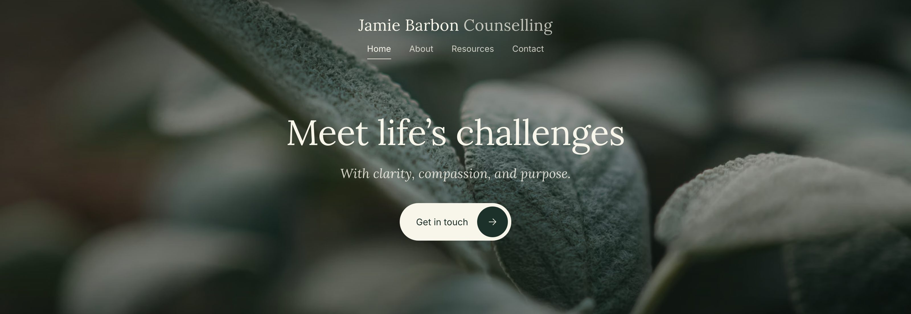
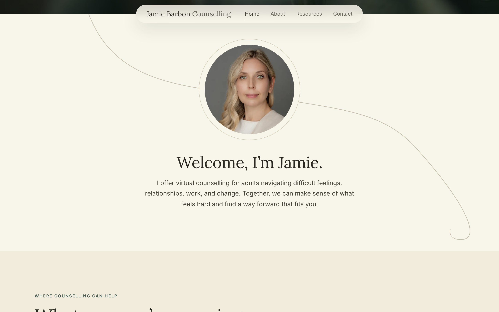
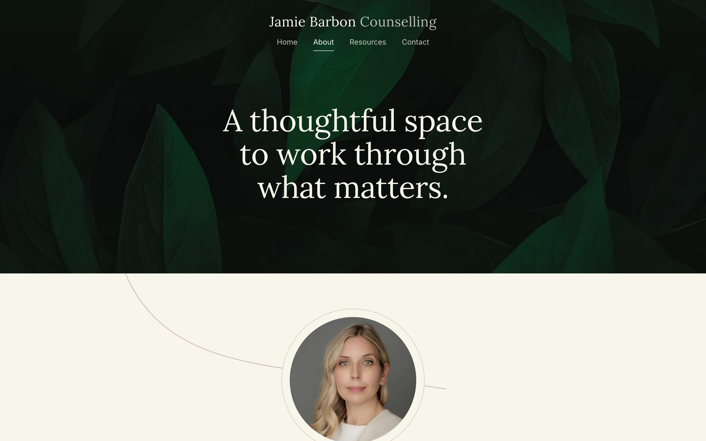
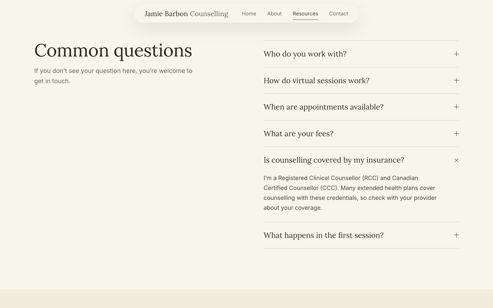
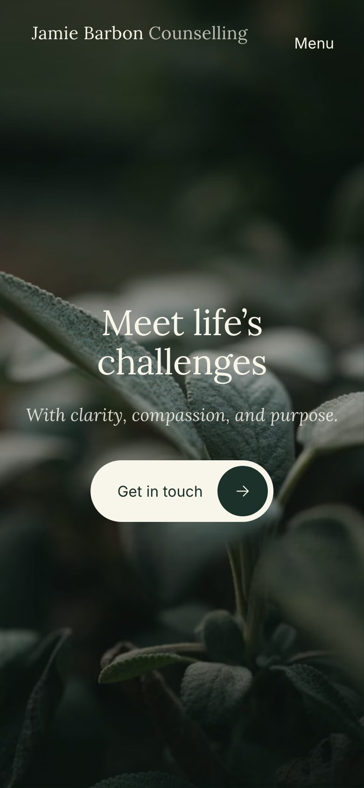
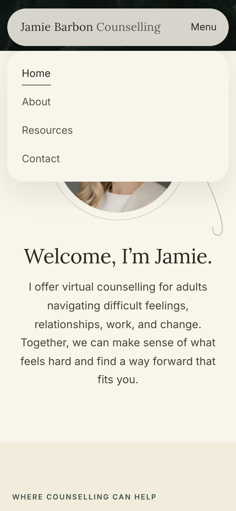

Hi Jamie, here’s where the website stands after our meeting. I’ve worked through the notes we agreed on, using Alex Harrison’s site as the style reference. The look is calmer and greener, it opens on plant photography, and your headshot is back in its circle. A few things need your input before launch; they’re listed on the last page.

| From the meeting | What changed | Status |
|---|---|---|
| Minimal, calm style | Simplified page tops and more breathing room, following Alex Harrison’s site. | Done |
| Greenery stock photos, no people | Every page now opens with a plant photo. The seated portrait on the home page has been removed. | Done |
| Circular headshot with divider line | Brought back on the Home and About pages. The line draws itself as you scroll. | Done |
| Home, About, Contact, Resources/FAQ | New Resources & FAQ page with six common questions and crisis support contacts. | Please review |
| Shorter tagline, smaller font | Now reads “Meet life’s challenges” at a smaller size. A softer second line follows: “With clarity, compassion, and purpose.” | Please confirm |
| Centred, floating header | The header sits centred at the top. When you scroll, it shrinks into a small floating bar. On phones it becomes a compact bar with a Menu button. | Done |
| Fonts | The serif and sans-serif pairing is unchanged. We’ll revisit it once the logo is placed. | Unchanged |
| Copy review | Waiting on your highlighted changes. No full rewrite, as agreed. | Your turn |

Just below the home page header, your headshot sits in a circle with a fine line flowing through the section. As soon as visitors scroll, the header turns into a small floating bar, so the menu is always within reach.

Each page now opens the same way: a dark plant photo with the page title on top. The About page then leads straight into your headshot and introduction.

Visitors can click a question to open its answer. Below the questions are 24-hour crisis lines (9-8-8, the Vancouver Island Crisis Line and 911), which work as tap-to-call links on phones.


The same calm layout scales down to phones. Tapping Menu opens a simple list of pages, which closes again when you tap anywhere else.
I’ve tested every page on desktop and mobile. That covered the menu, the FAQ and the scroll effects, plus moving through the site with a keyboard.